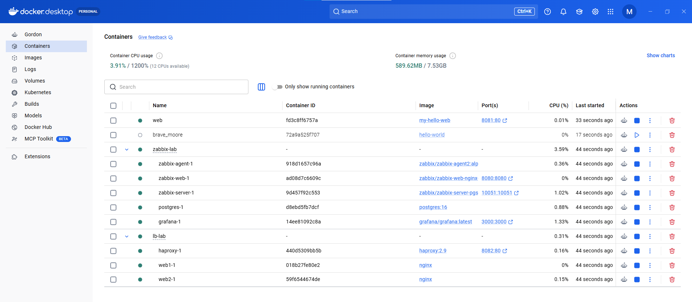
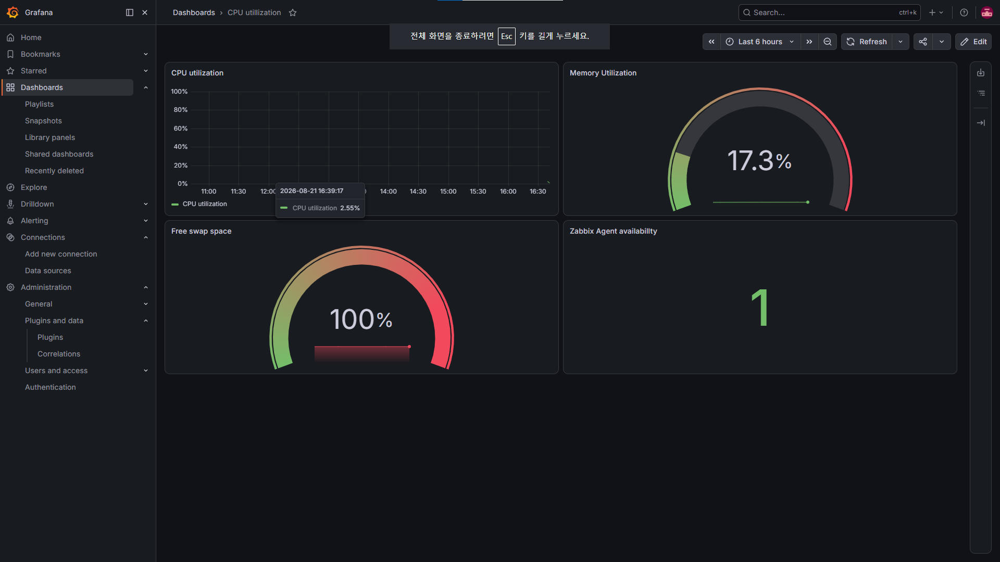

외부 요청은 HAproxy가 받아 nginx 2대로 분산하고, 관제 계층(Zabbix)이 전체를 감시하며 장애 시 Telegram으로 통보한다. 모든 구성은 Docker Compose로 코드화(IaC)되어 있다.
[외부 PC / 스마트폰]
│ LAN, :8082
▼
┌──────────────┐
│ HAproxy │ roundrobin + httpchk 헬스체크
└──────────────┘
│ │
▼ ▼
[nginx web1][nginx web2] ← 1대 다운 시 무중단 페일오버
▲
│ (HTTP / 서비스 감시)
┌────────────────────────────────┐
│ Zabbix 7.0 + PostgreSQL │ 수집 · 판단 · 트리거
│ Grafana (시각화 대시보드) │ 관제 화면
│ Telegram (장애 자동 알림) │ 통보
└────────────────────────────────┘
전체가 Docker host (Windows 11 + WSL2) 위에서
docker compose 로 선언·운영
[02] LIVE SCREENS
실제 구동 화면
직접 구축·운영 중인 홈랩의 실제 캡처. 컨테이너 8개가 모두 정상 기동 중이며, Grafana 대시보드에서 실시간 리소스를 관제하고 있다.

Docker Desktop — 컨테이너 오케스트레이션. zabbix-lab(5개: agent·web·server·postgres·grafana)과 lb-lab(3개: haproxy·web1·web2)이 Compose로 그룹화되어 전부 초록 상태로 기동 중. 포트 매핑(8080·10051·3000·8082)과 리소스 사용량이 함께 표시된다.

Grafana 관제 대시보드. Zabbix 데이터소스를 연동해 CPU 사용률(시계열), 메모리 사용률(게이지), 스왑 공간, Zabbix Agent 가용성을 한 화면에 구성. 임계치 기반 색상(초록→빨강)으로 상태를 직관적으로 표현.
[03] BUILD SCOPE
구축 범위
단순 설치가 아니라, 운영 관점의 감시 체계와 고가용성 구조를 직접 설계·구성했다.
01컨테이너 기반 인프라 (Docker / IaC)
Docker Compose로 8개 컨테이너를 선언형(YAML)으로 정의, 명령 한 줄로 전체 스택 재현
named volume(데이터 영속성)과 bind mount(설정 주입·개발)를 용도에 맞게 구분 적용
서비스 이름 기반 내부 DNS, depends_on 기동 순서, restart 자동복구 정책 활용
Dockerfile로 커스텀 이미지 빌드 — 개발용(bind mount)과 배포용(이미지 COPY) 방식 구분 이해
02통합 모니터링 (Zabbix + Grafana)
Zabbix Server 7.0 + PostgreSQL 백엔드, Agent2 기반 호스트 자원 수집